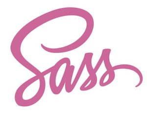

Budoucnost
CSS preprocesorů
Petr Koláček
Listopad 2006
-
premiéra 21. bondovky Casino Royale
-
v 94 letech zemřel slavný americký
ekonom Milton Friedman
-
vyšla 1. verze preprocesoru

Kdo ví, ...
... co znamená zkratka SASS?
syntactically awesome style sheets
Webové prohlížeče v roce 2006
Mozilla Firefox 2.0
Internet Explorer 7
Google Chrome (2008)
Opravdu potřebujeme CSS preprocesory i v roce 2020?
Proměnné ($variables)
```css
$base-color: #c6538c;
$border-dark: rgba($base-color, 0.88);
.alert {
border: 1px solid $border-dark;
}```
+
v CSS byly proměnné dlouhodobě potřeba
~
částečně je mohou nahradit CSS custom properties
Spojování CSS do jednoho souboru (@import)
~
máme HTTP/2 - už to není potřeba
Mixiny (@mixin)
```css
@mixin rtl($property, $ltr-value, $rtl-value) {
#{$property}: $ltr-value;
[dir=rtl] & {
#{$property}: $rtl-value;
}
}
.sidebar {
@include rtl(float, left, right);
}
/* vygenerovaný kód */
.sidebar {
float: left;
}
[dir=rtl] .sidebar {
float: right;
}
```
~
-moz -webkit - dnes už téměř není potřeba
−
nepřináší tolik užitku - zesložiťuje kód
Dědičnost (@extend)
```css
.error {
border: 1px #f00;
background-color: #fdd;
&--serious {
@extend .error;
border-width: 3px;
}
}
/* vygenerovaný kód */
.error, .error--serious {
border: 1px #f00;
background-color: #fdd;
}
.error--serious {
border-width: 3px;
}
```
−
v rozporu s principy OOCSS
The Indented Syntax
```css
@mixin button-base()
@include typography(button)
@include ripple-surface
@include ripple-radius-bounded
display: inline-flex
position: relative
height: $button-height
border: none
vertical-align: middle
&:hover
cursor: pointer
&:disabled
color: $mdc-button-disabled-ink-color
cursor: default
pointer-events: none
```
−
jak to bude vypadat po X letech a X kodérech?
Kdo z vás ...
... používá CSS preprocesory?
... pak kontroluje vygenerovaný CSS kód?
Cykly (@each, @for)
```
$icons: ("eye": "\f112", "start": "\f12e", "stop": "\f12f", "go": "\f12g", "up": "\f12h", "down": "\f12g" );
@each $name, $glyph in $icons {
.icon-#{$name}:before {
display: inline-block;
font-family: "Icon Font";
content: $glyph;
}
}
/* vygenerovaný kód */
.icon-eye:before {
display: inline-block;
font-family: "Icon Font";
content: "";
}
.icon-start:before {
display: inline-block;
font-family: "Icon Font";
content: "";
}
.icon-stop:before {
display: inline-block;
font-family: "Icon Font";
content: "";
}
.icon-go:before {
display: inline-block;
font-family: "Icon Font";
content: "";
}
.icon-up:before {
display: inline-block;
font-family: "Icon Font";
content: "";
}
.icon-down:before {
display: inline-block;
font-family: "Icon Font";
content: "";
}
```
!
potenciálně nebezpečné - může generovat velké množství kódu
Aritmetické fuknkce
```
$transition-speed: 1s/50px;
@mixin move($left-start, $left-stop) {
position: absolute;
left: $left-start;
transition: left ($left-stop - $left-start) * $transition-speed;
&:hover {
left: $left-stop;
}
}
.slider {
@include move(10px, 120px);
}
```
−
ve většině případů stačí CSS funkce calc()
Barvy
```
$btn-bkg: purple;
.btn {
display: inline-block;
padding: 18px;
background: $btn-bkg;
color: white;
&:hover {
background: darken($btn-bkg, 10%)
}
}
```
~
dnes lze vyřešit pomocí CSS Custom properties (příklad)
Kdo z vás ...
... používá zanořování (nestling)?
... pak kontroluje specificitu vygenerovaných selektorů?
Zanořování (nesting)
+
zapouzdřuje kód
−
z přehledného se stane velice snadno absolutně nepřehledné (u větších modulů)
−
v kódu nelze vyhledávat
−
nelze to tolik hlídat specificitu selektorů
CSS preprocesory v roce 2020
+
Proměnné ($variables)
−
Spojování (@import)
−
Dědičnost (@extend)
−
The Indented Syntax
~
Cykly (@each, @for)
−
Aritmetické fuknkce
~
Barvy
−
Zanořování (nesting)
−
Knihovny mixinů